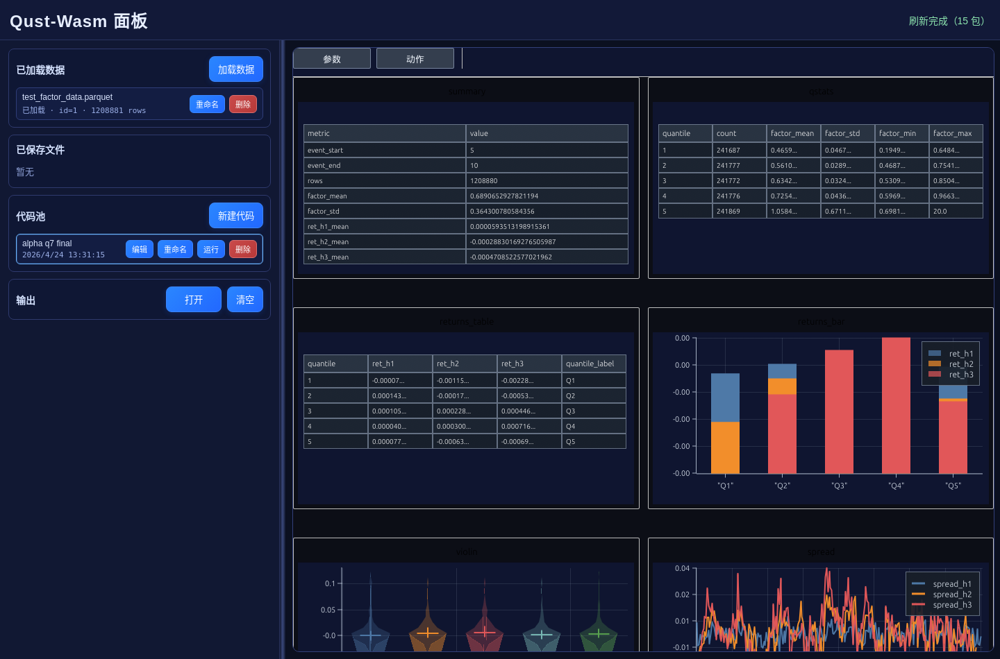
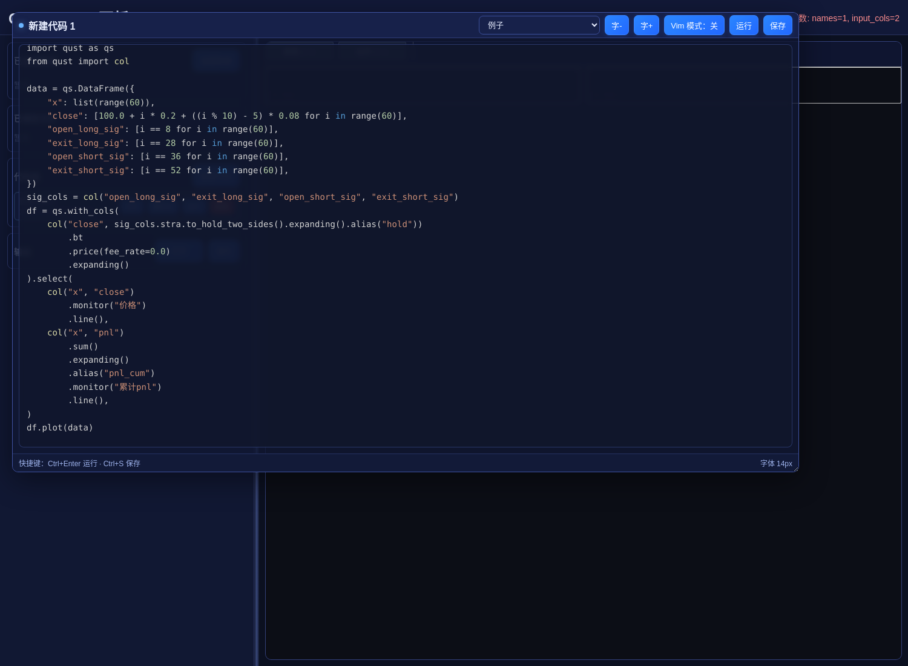
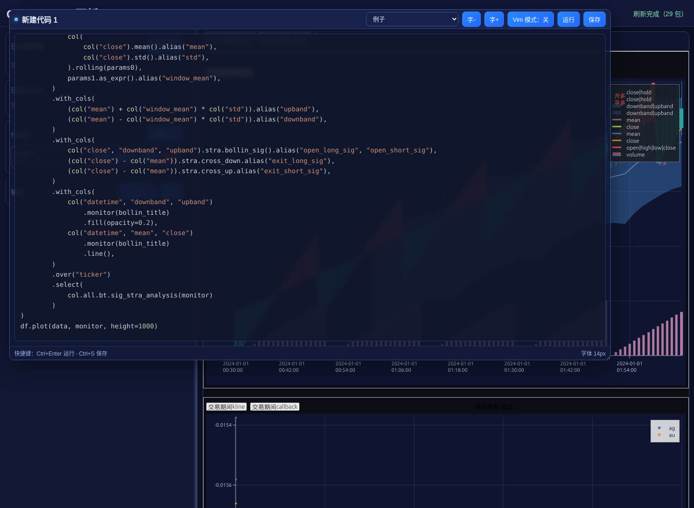

01
Operator System
算子丰富并且一致性强
时间序列、横截面、rolling、expanding、join、rank、TA、因子、策略和 UDF 都通过统一表达式组合。复杂研究逻辑可以复用、调试和迁移。
rolling
rank
join
UDF
PRIVATE QUANT RESEARCH WORKBENCH
Qust 把高性能表达式、流计算、远程执行、ClickHouse 数据源、策略分析 monitor、实时策略监控、凸优化和组合管理装进同一套 Python 工作流，用来支撑成千上万策略的运行、监控和管理。
Expression graph
alpha = pms(alpha101).as_expr()
df = col(
alpha.alpha.alphalen_analysis(monitor)
).runtime()
df.plot(data, monitor)
CAPABILITY COMMAND CENTER
不是散装功能列表，而是围绕“算、看、查、扩、部署”的研究系统。
Operator System
时间序列、横截面、rolling、expanding、join、rank、TA、因子、策略和 UDF 都通过统一表达式组合。复杂研究逻辑可以复用、调试和迁移。
Snapshot by
把中间结果和研究节点保存下来，便于调试多阶段因子、策略输入和组合约束。
Monitor
Monitor 用来分析策略表现、定位交易样本、观察参数变化，也能用于实时监控策略运行状态。
Portfolio
组合优化、约束、成本、持仓、调仓和回测可以接入表达式执行流。
Remote + Data
表达式可发送到远端执行，靠近 ClickHouse、Parquet 和内部数据服务。
Streaming
面向持续到达的数据批次执行 update/stream 计算，适合增量分析和实时监控。
Strategy Ops
用统一表达式和运行时组织大量策略，支持批量计算、状态观察、结果归档和实时监控。
Performance
底层利用 Rust、Arrow、Polars/DataFusion 生态，减少 Python 对象循环和数据搬运，让大量策略批量运行、回测、监控和归档时仍然保持响应。
EXECUTION FABRIC
Qust 的商业价值来自执行边界清晰：本地研究、远程服务、数据源、流式输入、批量策略运行、策略分析和实时监控都被统一在表达式模型中。
MONITOR WORKSPACE
Monitor 的重点不是普通图表展示，而是把策略收益、风险、交易样本、信号变化、实时状态和大量策略的运行结果放在同一套可交互界面里。


参数变化后事务式刷新，适合比较窗口、阈值、分位数、组合约束和策略稳定性。
在散点、K 线、热力图和表格上选择区域，回源查询并定位具体交易、信号和行情片段。
用于观察策略运行状态、实时指标、异常信号和执行结果，帮助在大量策略中尽早发现策略偏离。
把策略运行、参数版本、回测结果和监控状态集中管理，适合成千上万策略的持续迭代。
PRIVATE DEPLOYMENT
对量化研究来说，策略逻辑、样本数据、实时监控状态和研究结果都不适合上传到外部平台。Qust 可以部署在私有网络或本地服务器，接入现有数据系统，并按已有研究方式扩展。
行情、因子、持仓、成交、策略代码、中间结果和 monitor 输出留在私有环境控制范围内。
把已有因子、风控规则、交易成本、组合约束、信号规则封装成统一表达式算子。
接入 ClickHouse、Parquet、行情服务、内部数据库、回测样本库、实时数据流或自研 API。
部署、算子、数据源、策略管理和监控页面都可以按实际流程扩展，避免被外部平台功能边界限制。
在私有环境里组织成千上万策略的运行、回测、实时监控、结果归档和版本管理。
CONTACT
适合沟通：算子扩展、数据源接入、远程计算、ClickHouse、流式监控、策略分析、实时策略监控、大量策略运行管理和组合优化。
添加时备注：Qust 私有化部署。